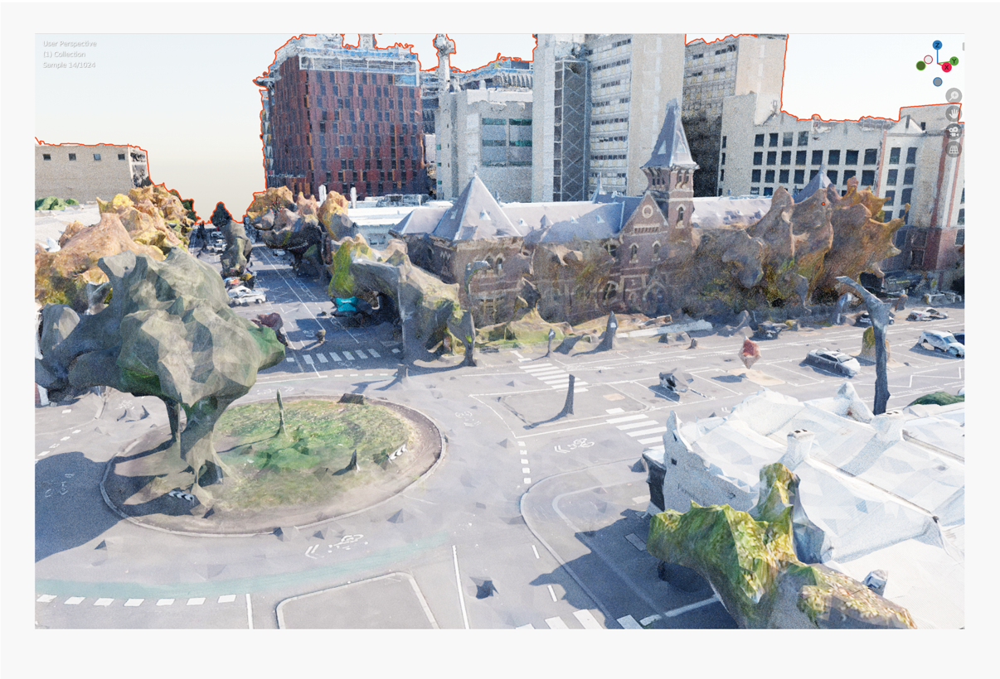
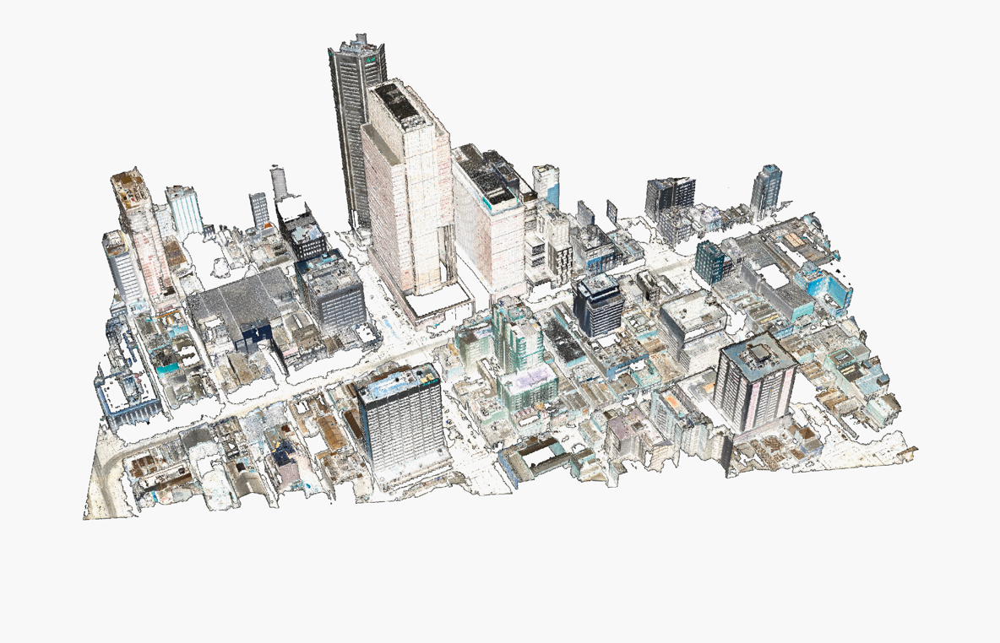
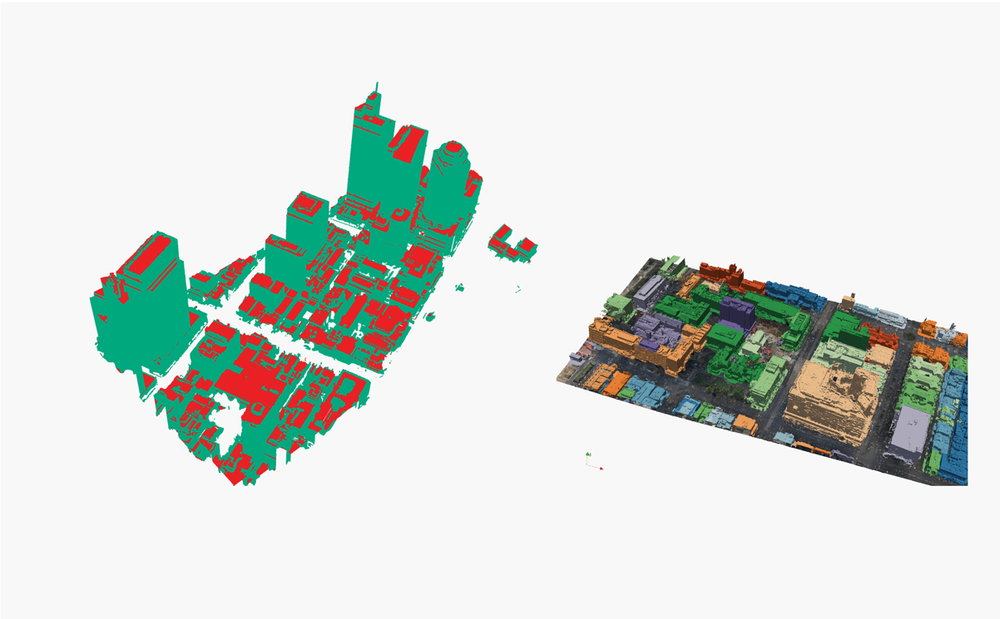
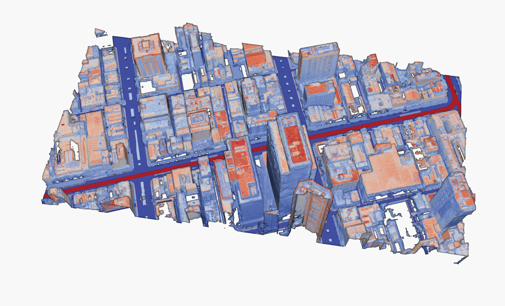
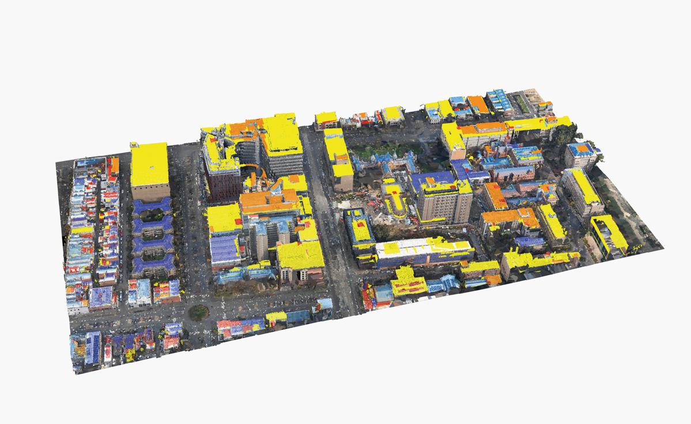
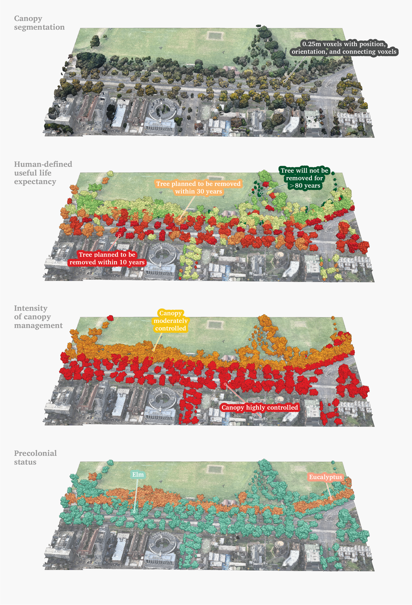
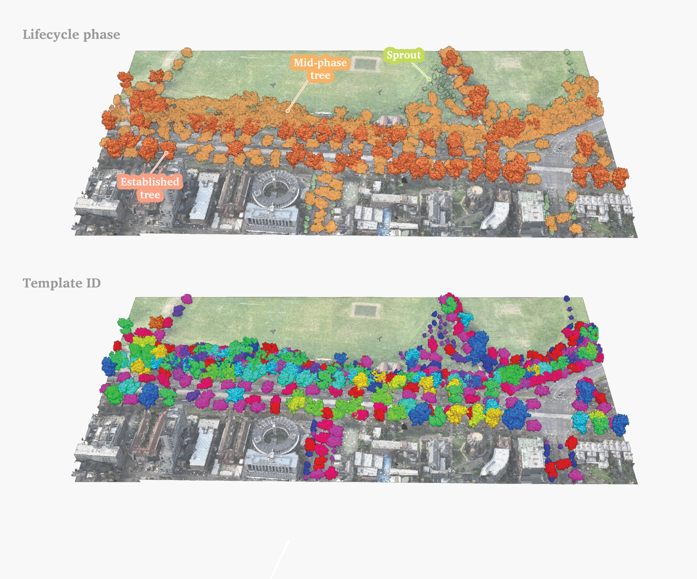
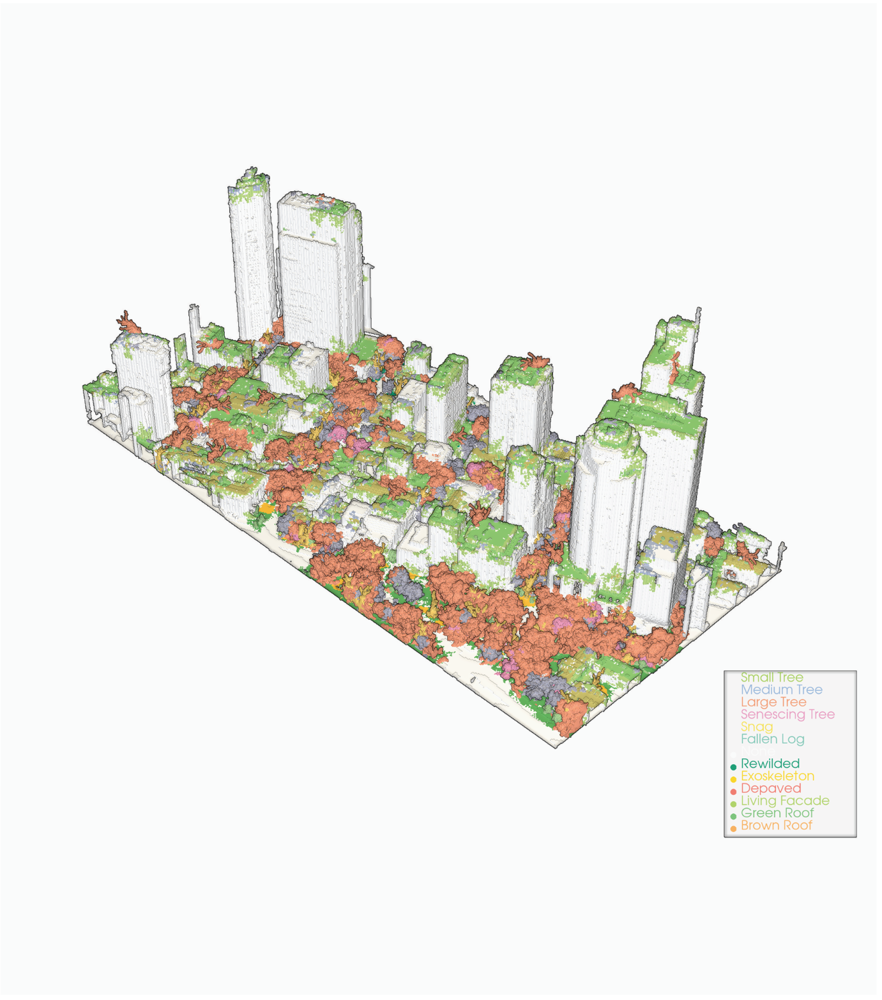

Appendix E: Habitat Volumes
The main text models sites as habitat volumes. This appendix describes how the model creates habitat volumes as voxels with attributes. The model accepts inputs that differentiate the voxel grid in the habitat volume and defines additional voxels and attributes that encode the input. Attributes can be integers, floats, Booleans, and strings. Table 10 lists the data sources we use to generate the initial habitat volume.
Table. Inputs | Input | Source | Format | Attributes used in voxels | Role in volume | | — | — | — | — | — | | Urban forest | City of Melbourne | Points | Scientific name; Genus; Diameter at breast height; Position; Useful life expectancy; Age; TreeID; Management condition | Seed initial habitat features, set lifecycle and management, set canopy footprints | | Photogrammetry meshes | City of Melbourne | Meshes | Meshes, colours | Define voxels for building and other structures,; Define colours for all voxels | | Contours | City of Melbourne | Lines | Elevation | Define ground surface | | Road corridors and segments | City of Melbourne | 2D polygons | Street level layouts (footpaths, kerbs, roads, medians, tramways); Surface types (ie paved/depaved); Major/minor roads | Define ground conditions on ground surface | | Aerial lidar | City of Melbourne | LAS tiles | Point distance as LAS_Distance | Help define ground and roofs; Align buildings to terrain | | Building scene | Development Activity Model | 3D volumes | building_ID on voxels, building_distance, building_normalX, building_normalY, building_normalZ | Set surface orientations; Group individual buildings, facades and roofs | | On-street car parking | City of Melbourne | 2D polygons | road_terrainInfo_isParking, road_terrainInfo_isParkingMedian3mBuffer | Define car-park voxel attribute | | Open space | City of Melbourne | 2D polygons | road_terrainInfo_isOpenSpace | Define open space voxel attribute | | Laneways | City of Melbourne | Polygons | road_terrainInfo_isLittleStreet | Define existing greening voxel attribute | | Tree canopies | City of Melbourne | Polygons | site_canopy_isCanopy, road_canopy_isCanopy | Group voxels under individual trees | | Roof assesment | City of Melbourne | Polygons | Green roof compatiability (score of 1-5); Brown roof compatibility (score 1 – 5) | Define roof type voxel property | | Utility poles | City of Melbourne and Victorian Government | Points | poletype, isArtificial | Define locations for artificial canopies |
Workflow for initialising habitat volume
Table 11 shows the workflow that prepares the initial habitat volume.
Table. Steps to initialise the habitat volume | | Step | Inputs | Operation | Output | Attributes added | | — | — | — | — | — | — | | 1 | Set site | Site name and size | Get centre in eastings and northings, set bounds | Site centre and bounds | voxel_size, bounds | | 2 | Build terrain | Contours | Interpolate elevation on a grid, clip to bounds | Terrain mesh | Elevation | | 3 | Collect meshes | Photogrammetry meshes | Select meshes in bounds, interpolate as voxels | Site meshes | colour | | 4 | Process buildings | GLB scene and terrain | Group voxels as buildings | Building mesh | building_ID | | 5 | Segment site | LAS tiles, building mesh, site meshes | Combine sources, transfer lidar distance and building data to voxels, compute surface normals and distances | Site voxels | LAS_Distance, building_distance, building_normalX, building_normalY, building_normalZ | | | Generate ground | Road corridors and road segments | Define ground conditions on terrain | Road tables | roadCorridors, roadCorridors_str_type, road_ID, roadInfo_type | | 7 | Assign surface types | Surface types, road types, Car parks, laneways, open space | Trim to bounds, rasterise onto voxels | Site voxels | roadInfo_type,; road_terrainInfo_isParking, road_terrainInfo_isOpenSpace, road_terrainInfo_isLittleStreet, road_terrainInfo_isParkingMedian3mBuffer | | 8 | Define roofs | Green roofs and buildings | Map roof ratings to envelope types on building voxels | Roof mask | envelope_roofType | | 9 | Collect poles | Pole points | Identify pylons and streetlights in bounds | Pole table | poletype, isArtificial | | 10 | Group voxels under canopies | Tree canopies | Clip to bounds, rasterise onto voxels | Site voxels | Tree_footprint_ID | | 11 | Define urban forest properties | Urban forest points and terrain | Trim to bounds, keep species and measures, project to terrain elevation, assign tree numbers | Tree table and canopy footprints | urbanForest_*, tree_number | | 12 | Place tree features | Urban forest table | Match trees location to features and place features in the grid | Tree voxels | Resource attributes per feature |
The figures below provide further details of steps.

Figure 1. Initial photogrammetry mesh from the City of Melbourne (Step 3: Collect meshes). The photomesh provides building boundaries and colours for the habitat volume. However, the mesh lacks structure and includes smoothing algorithms that create irregular urban surfaces.
Figure 2. Extraction of building surfaces (Step 4: Process buildings). We use canopy outline data from the City of Melbourne to remove existing tree canopies from the photomesh, retaining only building surfaces. We use this clipped photomesh as an input into the voxel grid. This process generates voxels that define buildings in the habitat volume. This image shows the effect of accepting the photomesh as input in the habitat volume for the City site
Figure 3. Building segmentation and voxelisation (Step 5: Segment site). We use the City of Melbourne development model (simplified building volumes) to segment individual buildings and provide surface orientation for voxels in the habitat volume. We use this to assign voxels generated in the photomesh step as buildings, remove ground voxels generated at this stage, and assign building and surface orientations to voxels. The right image shows how we use surface orientation of voxels to identify facades (green) and roofs (red). The left image shows voxels grouped into individual buildings (different colours).
Figure 4. Building segmentation and voxelisation (Step 5: Segment site). We use the City of Melbourne development model (simplified building volumes) to segment individual buildings and provide surface orientation for voxels in the habitat volume. We use this to assign voxels generated in the photomesh step as buildings, remove ground voxels generated at this stage, and assign building and surface orientations to voxels. The right image shows how we use surface orientation of voxels to identify facades (green) and roofs (red). The left image shows voxels grouped into individual buildings (different colours).
Figure 5. Ground surface generation (Step 6: Generate ground). We generate terrain from contour data and apply GIS street boundaries from the City of Melbourne. This process creates street-level voxels in the habitat volume and assigns further attributes to ground voxels. This image shows the output of this step at the “City” site. Dark blue indicates major roads. Red shows tram tracks. Light blue marks median strips.
Figure 6. Additional inputs (Step 8: Define roofs). The habitat volume accepts additional inputs such as GIS data that rates rooftop suitability for greening. For roof rating data, the model identifies roof voxels within boundaries and defines an additional attribute encoding the rating. This image shows the output of this step at the “Street” site. Yellow roofs indicate surfaces suitable for greening. Blue roofs indicate surfaces inappropriate for greening.
Figure 7. Urban forest as additional inputs (Steps 11,12).Urban forest data1 provides one such input. This data provides locations, species, management conditions, lifecycle phases, and useful life expectancies for existing trees. The model matches these specifications to appropriate habitat features and populates the grid with new voxels accordingly.Urban forest reconstruction continued (Steps 11,12). Urban forest data also us to assign lifecycle phase and individual feature IDs to voxels.
Further processing of habitat volume
Roof surfaces undergo assessment for their ability to support additional structures (Figure 8). Based on this, the model assigns potential fallen trees to eligible roof voxels.

Figure 8. Translocated fallen trees on rooftops in the City site at year 180 in the positive pathway.The process:
Assesses roof surfaces for structural capacity to support additional loads
Reads a log library cross-referenced to fallen tree habitat feature types, with mass per item and size class
Derives roof from the number of roof voxels and the voxel size
Computes a log load budget per roof based on structural capacity
Allocates logs to roof voxels while capacity remains
Table X outlines the process for allocating fallen trees to rooftops.
Table. Fallen tree allocation process for roof surfaces | Step | Action | Details | | — | — | — | | 1 | Set budget | Green roof log load: 50 kg per square metre (assumes rest taken up by live plants, soil, water); Brown roof log load: 100 kg per square metre; Minimum viable roof area: 10 square metres | | 2 | Define roofs | Group roof voxels by building and envelope type | | 3 | Skip small roofs | Ignore roofs under the area threshold | | 4 | Compute capacity | Multiply log load by roof area | | 5 | Order by size | Attempt to place large logs first, followed by medium, then small logs | | 6 | Place logs | Loop that randomly selects voxels within a roof as potential locations for fallen trees/logs until roof capacity exhausted | | 7 | Assign voxel attribute | Assign selected voxels the property ‘potential_log_host’, as well as the log ID and its size |
Output attributes
The steps above produce habitat volumes with voxels differentiated by their attributes. Table 13 lists the output attributes in the habitat volume for this version. We use these attributes to calculate resistance, model pathways, and generate relational indicators.
Table. Habitat volume attributes | Type | Attribute | Description | | — | — | — | | Bioavailable portion of habitat volume | Arboreal; Low-vegetation; Open space; None | Branches in canopies; Areas with shrubs, grasslands, and fallen logs; Permeable surfaces with minimal vegetation; Not bioavailable | | Arboreal resources | Perch positions; Dead branches; Hollows; Epiphytes; Peeling bark; Fallen nurse logs | Spatial features found in intact woodlands with large old trees2. | | Urban forest data (for biological habitat features) | Scientific name / Genus; Diameter at breast height; Age; Useful life expectancy; Management condition | Distinguishes “elm” and “eucalyptus” feature varients; Allows model to asses feature age when simulating pathways; Age of biological habitat features; Number of years until humans will remove feature; Unmanaged, moderated, risk-adverse | | Urban elements | Roadway; Busy roadway; Façade; Green roof; Brown roof; Open space; Parking; Existing conversion; Utility pole (node); Possible node | Standard vehicle carriageways; Major arterial roads; Vertical building surface; Possible intensive planting roofs; Possible extensive planting roofs; Permeable ground surfaces; On site parking, median strips, and other readily convertible road space; Locations earmarked for existing conversion; Possible location for artificial canopies; Possible location for translocated snag or fallen tree | | Grouping | Habitat feature; Canopy footprint; Patch group | Voxels aggregated into habitat features; Voxels on ground surface beneath a habitat feature; Voxels grouped as patches |
References
Footnotes
City of Melbourne. (2012). Urban forest strategy 2012–2032: making a great city greener. Melbourne, City of Melbourne.↩︎
Darren S. Le Roux, Karen Ikin, David B. Lindenmayer, Adrian D. Manning, and Philip Gibbons. (2018). The value of scattered trees for wildlife: contrasting effects of landscape context and tree size. Diversity and Distributions 24(1), 69-81. https://doi.org/10.1111/ddi.12658↩︎